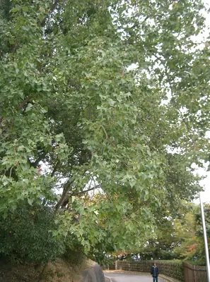

pranet · 出典付きの植物図鑑
ナンキンハゼ ☠
Triadica sebifera (L.) Small · Euphorbiaceae

ナンキンハゼ は、トウダイグサ科ナンキンハゼ属の落葉高木。名はハゼノキと同様に蝋を採取できることに由来するが、ハゼノキはウルシ科の別の種である。ナンキンハゼは以前はシラキ属に分類され、Sapium sebiferum の学名で呼ばれていた。別名、トウハゼ。
出典: Wikipedia 日本語版「ナンキンハゼ」 · CC BY-SA 4.0
異名: Carumbium sebiferum (L.) Kurz, Croton macrocarpus Rchb. ex Müll.Arg., Croton sebifer L., Excoecaria sebifera (L.) Müll.Arg., Sapium chihsinianum S.K.Lee, Sapium pleiocarpum Y.C.Tseng, Sapium sebiferum (L.) Dum.Cours., Seborium chinense Raf., Seborium sebiferum (L.) Hurus., Stillingfleetia sebifera (L.) Bojer, Stillingia sebifera (L.) Michx., Stillingia sinensis (Lour.) Baill., Stillingia sinensis Müll.Arg., Triadica chinensis Spreng., Triadica sinensis Lour.
同定や利用は自己責任でお願いします。この図鑑だけを根拠に野生の植物を食べないでください。
出典
- 学名: World Flora Online Plant List 2026-06 · CC0 1.0
- 名前: Wikipedia の記事名と Wikidata · CC0 1.0（Wikidata）。記事名は事実
- 説明: Wikipedia 日本語版「ナンキンハゼ」 · CC BY-SA 4.0
- 食用・毒性: World Checklist of Useful Plant Species (Diazgranados et al. 2020, RBG Kew) · CC BY 4.0
このページは pranet のデータから自動生成しています。コードは MIT、データは項目ごとのライセンス（説明）。